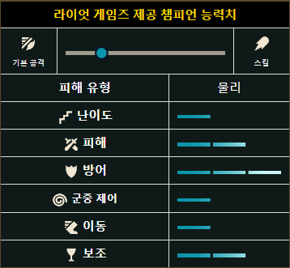
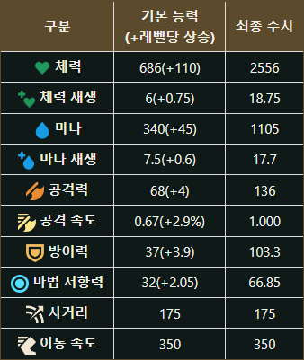

트런들은 몸집이 크고 교활한데다 잔인한 면모를 두루 갖춘 트롤로,
일단 트런들이 몽둥이를 들면 굴복시키지 못할 상대는 없다. 심지어
프렐요드 전역을 통틀어서 말이다. 영역 본능이 매우 강한 트런들은
자신의 영토에 발을 디딘 멍청한 자들을 쫓아가서, 거대한 얼음 정수의
몽둥이를 들고 적을 뼛속까지 얼린 채 서서히 죽어가는 모습을 보고
껄껄 웃는다.
1-1 장문배경
트롤은 대개 룬테라의 험악한 환경에서 주로 살아가는 거대하고 흉포한
생명체다. 불사의 존재는 아니지만 다른 필멸 종족, 특히 약한
인간보다 빠른 회복력과 강인한 신체를 자랑한다. 덕분에 트롤은
기후가 혹독하고 자원이 희소한 환경에서도 경쟁자보다 오래
살아남으며 버틸 수 있다. 규모가 큰 것으로 알려진 부족들이 여전히
프렐요드 산악 지대에서 살아가는 것도 이러한 이유 때문이다.
트런들은 열다섯 명의 형제자매와 함께 지저분한 동굴에서 태어났다.
하지만 유난히 힘든 시기를 거친 후 족장의 무리에 합류할 만큼
튼튼하게 자란 것은 그중 일곱에 불과했다. 결국 첫 번째 겨울 약탈이
끝나자 단 셋만이 남고 말았다. 족장은 포식하는 무리를 향해 다시
돌아가서 같은 땅을 약탈하자고 부추겼다. 모두가 자신들을 두려워할
테니 다시 돌아갈 때마다 약탈하기도 더 쉬워질 것이라는 얘기였다.
트런들은 눈살을 찌푸리며 일어나 별로 좋은 생각이 아니라고
주장했다. 부족이 약탈한 이들은 더 이상 가진 것이 없었다. 곳간이
다시 가득 차고 가축이 몇 입 거리는 될 정도로 자라기를 기다렸다가
다음 겨울에 돌아가야 했다. 이 생각에 전혀 동의하지 않는 다른
트롤들은 이빨을 갈고 머리 옆을 퍽퍽 치며 트런들의 말을 이해하려고
애썼다. 겁쟁이 녀석인가? 너무 추워서 머리까지 얼어붙었나? 결국
족장은 트런들을 바위로 흠씬 두들긴 후 산비탈에 던져 버렸다. 무리에
멍청이가 있을 곳은 없었다. 자신이 근처 어느 곳에서도 환영받지
못하리라는 사실을 안 트런들은 멀리 이동했다. 툰드라 이곳저곳에
흩어진 다른 트롤 부족을 피하며 산악 지대를 배회하는 무시무시한
설인과 거리를 유지하려고 애썼다. 밤이 되면 별을 올려다보며 어렸을
때 들은 현명한 그럽그랙의 전설과[1] 어신을 섬기고 지배자의 증표인
강력한 무기를 손에 넣었다는 고대 트롤 왕들의 이야기를 하나하나
떠올렸다. 마침내 트런들은 땅속 깊이 파인 거대한 균열에 다다랐다.
바람을 피할 수 있어 기뻤지만, 얼마 지나지 않아 미로처럼 이리저리
꼬인 황량한 협곡에서 길을 잃고 말았다. 협곡은 프렐요드 위로
솟아오른 산보다도 더 깊숙이 땅을 파고든 것 같았다. 그리고 그
심연의 바닥에서 트런들은 얼음 마녀를 만났다. 얼음 마녀는 빛이
희미하게 일렁이는 얼어붙은 호수 위에서 트런들을 기다렸다. 털가죽과
금속으로 몸을 감싼 작은 인간 전사들이 호수를 에워싸고 있었다.
그러나 트런들은 전혀 기죽지 않았다. 얼음 마녀는 트런들이 어떻게
자신의 영역 심장부까지 찾아 들어왔는지, 어떻게 호수 위를 걸을 수
있는지 궁금해했다. 트런들은 밑을 내려다봤다. 발밑의 얼음은 저
위쪽에 있는 밤하늘보다도 어두웠다. 머릿속에서 뇌가 미친 듯이
꿈틀거리는 듯한 기분이었다. 얼음 마녀는 트런들이 '냉기의
화신'이라는 아주 특별한 존재이니 자신과 함께 이곳에 있어야 한다고
했다. 하지만 그러고 싶지 않았던 트런들은 자신이 어쩌다 부족에서
추방되었는지 얘기하며 위대한 무기를 찾아 그럽그랙과 다른 이들 같은
트롤 왕이 되고 싶다고 했다. 놀랍게도 트런들의 말을 받아들인 얼음
마녀는 트런들에게 '뼈분쇄자'라는 이름의 거대한 얼음 몽둥이를
건넸다. 이 몽둥이가 있으면 모든 트롤의 왕이 되어 자신의 인간
부족과 견고한 동맹을 맺을 수 있다는 것이었다. 트런들은 기꺼이
몽둥이를 받아 집으로의 긴 여정을 시작했다. 족장은 다시 돌아온
트런들을 면전에서 비웃었다. 그러나 트런들이 뼈분쇄자를 휘두르자
상황이 달라졌다. 뼈분쇄자의 얼음 마법에 순식간에 얼어붙은 족장은
두 번째 타격에 산산조각이 났다. 트런들의 새로운 힘에 경외심을 느낀
무리는 트런들에게 얼음 마녀와 그녀가 약속했다는 동맹 이야기를
들었다. 트런들은 똑똑했다. 트런들은 강력한 힘의 주인으로
선택받았다. 트런들은 그들의 왕이 될 것이다. 트런들이 이끈다면
트롤의 시대가 반드시 도래하리라.
2. 능력치


능력치가 준수한 편이다. 기본 체력, 공격력, 이동 속도, 공격 속도는
상위권이고 체력 재생은 상위권이었으나 대폭 너프되어 하위권이다.
공격력을 뺏는 Q와 궁극기로 방어력/마법 저항력을 훔치는 것은
예외인지 성장 방어력은 무려 뒤에서 2등이다. 치명타가 터질 경우
뼈분쇄자를 횡으로 휘두른다. 깨물기에는 치명타가 터져도 모션이
바뀌지 않는다. 트런들의 이동 속도가 높을수록 춤 속도도 빨라진다.